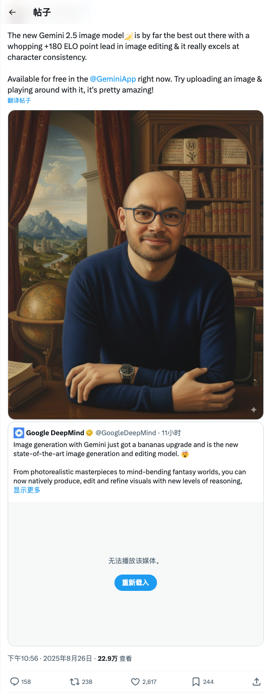

demishassabis_Gemini 2.5图像模型在图像编辑和角色一致性方面表现卓越
发布时间: 2025-08-26T14:56:25.000Z Google DeepMind的Demis Hassabis宣布，全新的Gemini 2.5图像模型在图像编辑和角色一致性方面表现卓越，以180 ELO点领先成为业界最佳。该模型现已在Gemini应用中免费提供，用户可体验其先进的图像生成、编辑和精修能力，实现更高水平的视觉推理。
2025-08-26
Google DeepMind的Demis Hassabis宣布，全新的Gemini 2.5图像模型在图像编辑和角色一致性方面表现卓越，以180 ELO点领先成为业界最佳。该模型现已在Gemini应用中免费提供，用户可体验其先进的图像生成、编辑和精修能力，实现更高水平的视觉推理。
Steeve Morin宣布，经过一周的努力，其zml/llmd项目已成功在TPU上实现透明运行，并支持完整的预填充/解码分页注意力机制。这一突破性进展意味着用户无需修改任何代码，仅通过一个简单的配置即可启用该功能，极大地简化了在TPU上部署和优化大型语言模型的工作流程，展示了高效且无缝的硬件加速能力。
Niklas Muennighoff团队正深入探讨人工智能，特别是前沿大型语言模型（LLMs）在解决数学、物理、编程及医学等领域开放性问题上的能力。他们通过收集未解决的问题并利用LLMs进行测试，发现部分由AI生成的解决方案已成功通过专家验证。这表明AI在推动科学研究和突破现有知识边界方面展现出巨大潜力。
谷歌宣布对Google翻译进行两项重要更新，其中一项是推出由Gemini模型驱动的“实时翻译”功能。用户现在可以在Translate应用中进行实时语音对话和屏幕翻译，支持超过70种语言。此功能本周起在美国、印度和墨西哥的用户中推出，旨在促进不同语言使用者之间的交流。

谷歌Chrome浏览器迎来重大更新，现已全面集成AI功能。该AI能力使其能够读取屏幕内容、理解上下文，并对用户正在浏览的任何网站内容进行解释，无论网站类型。此次更新引入了10项全新的AI功能，旨在显著提升用户体验和信息获取效率。
Google宣布将于今年十月在Fitbit应用中推出一项全新的AI驱动个人健康教练功能。该功能集健身教练、睡眠指导和健康顾问于一体，旨在全面协助用户提升健康水平。此举标志着Google在整合人工智能与可穿戴健康设备方面迈出重要一步，为用户提供更个性化、智能化的健康管理服务。
谷歌正式发布图像生成与编辑模型Gemini 2.5 Flash Image，作为Gemini 2.0 Flash的升级版。该模型在LMArena图像编辑榜单上排名第一，并已开放API调用。其核心亮点包括：支持多图融合、在不同场景下保持角色或对象一致性、通过自然语言实现精准图像变换与局部编辑，以及利用Gemini的世界知识进行图像创作与推理。新模型强调了原生多模态在图像生成领域的未来潜力，并提供了丰富的应用模板，展现了其在复杂编辑和语义理解方面的强大能力。
面壁智能最新开源的8B参数多模态模型MiniCPM-V 4.5，凭借其首创的“高刷视频理解”能力，在端侧多模态领域树立了新标杆。该模型在单图、长视频理解、OCR及复杂文档解析等多个任务上均达到同级别或通用模型的SOTA水平，甚至超越了参数量更大的Gemini 2.5 Pro和GPT-4o等顶尖云端大模型。MiniCPM-V 4.5通过创新的3D-Resampler结构实现高密度视频压缩，并融合OCR与知识学习，支持混合推理模式，展现出卓越的性能与能效比，为端侧AI应用提供了高效且强大的解决方案。
世界首富马斯克宣布全面投入AI领域，计划在五年内实现5000万张H100 GPU的算力，预计总成本将超过2万亿美元（约14万亿元人民币）。这一庞大投资远超美国年度军费，凸显AI已成为新的战略竞争焦点。马斯克旨在通过构建如Colossus 2代这样的超算集群，为xAI、特斯拉等旗下公司提供海量算力，以训练下一代大模型（如Grok 4）、开发多模态智能体及视频生成模型，并最终实现数十亿张H100的终极目标，从而在AI领域建立压倒性优势。此举也面临巨大的电力供应挑战。
华中科技大学与小米汽车联合推出ReCogDrive，首个开源强化学习驱动的驾驶视觉语言动作模型。该框架融合视觉语言模型的世界知识、扩散规划器及强化学习微调，旨在解决端到端自动驾驶在长尾场景下的泛化难题。ReCogDrive通过三阶段训练范式，包括构建310万驾驶问答数据集、引入扩散模型生成连续轨迹，并利用仿真器辅助强化学习优化驾驶策略，使其能理解复杂路况并生成安全、类人类的驾驶轨迹。该模型在NAVSIM基准测试中取得PDMS 90.5的SOTA成绩，显著提升了自动驾驶的认知能力与泛化性能，推动了VLM在安全驾驶领域的应用。
英伟达最新推出由华人团队打造的小模型系列Jet-Nemotron（2B/4B），其核心创新在于PostNAS高效架构优化和新型线性注意力模块JetBlock。该系列模型在数学、代码、常识、检索及长上下文等维度上准确率超越Qwen3、Gemma3、Llama3.2等主流模型，并在H100 GPU上实现最高53倍的推理吞吐量提升，尤其在长上下文场景下表现卓越。JetBlock性能显著优于Mamba2，使得Jet-Nemotron成为兼具速度与准确性的高效小模型，预示英伟达在小模型领域持续发力。
英伟达正式发布新一代机器人专用芯片Jetson Thor，其搭载Blackwell架构GPU，AI算力较上一代提升7.5倍至2070 FP4 TFLOPS，能效提升3.5倍。该芯片专为具身智能和物理AI智能体设计，支持大型Transformer、VLM及VLA模型在端侧实时运行，最大限度降低对云端依赖。Jetson Thor兼容NVIDIA全套AI软件栈，已获宇树科技、银河通用等国内顶尖机器人公司采用。英伟达正积极布局机器人和自动驾驶等万亿美元市场，视其为未来核心增长点，旨在为整个行业提供基础设施算力与软件支持。
该GitHub仓库“System Prompts Leaks”致力于收集并公开各种已部署聊天机器人的系统消息指令。它提供了一个集中化的资源库，用于研究和分析不同AI聊天机器人的底层提示设计，对于理解大模型行为、进行提示工程研究以及探索AI安全与伦理具有重要价值。该项目鼓励社区贡献，旨在促进对AI系统内部运作机制的透明化理解。
Verifiers是一个模块化库，专注于为大型语言模型（LLM）强化学习构建环境和训练智能体。它提供异步GRPO实现，支持与Hugging Face Transformers Trainer及prime-rl集成，实现大规模FSDP训练。该库可用于LLM评估、合成数据生成和智能体开发，支持单轮、多轮及工具调用环境，并兼容OpenAI客户端和vLLM采样参数，旨在成为可靠的RL基础设施工具包。

DeepCode是一个由香港大学数据智能实验室开发的AI驱动的开源智能体编码平台。它通过多智能体系统自动化代码生成和实现任务，能够将研究论文、自然语言描述转化为高质量、生产就绪的代码。其核心功能包括Paper2Code（算法实现）、Text2Web（前端开发）和Text2Backend（后端开发），显著加速了从概念到代码的转化过程，提升了开发效率和研究复现能力。平台支持CLI和Web界面，并采用Model Context Protocol (MCP) 标准进行工具集成。
SurfSense是一个高度可定制的AI研究代理，旨在通过整合个人知识库和外部数据源（如搜索引擎、Slack、Notion、YouTube等）来提升研究能力。它支持50多种文件格式上传，提供强大的搜索、与保存内容自然语言交互、引用式回答等功能。该项目支持本地LLM部署以保护隐私，并具备自托管能力。其核心技术包括先进的RAG技术（支持百余种LLM和数千种嵌入模型，采用分层索引和混合搜索），以及快速播客生成功能。SurfSense还提供跨浏览器扩展，用于保存网页内容。

MCP Gateway是一个功能丰富的网关、代理和MCP注册中心，旨在统一REST、MCP和A2A服务，为AI客户端提供统一的端点。它支持服务发现、认证、限流、可观测性、虚拟服务器和多传输协议，并提供可选的管理UI。该网关可部署为完全兼容的MCP服务器，通过PyPI或Docker进行部署，并能通过Redis支持的联邦和缓存扩展到多集群Kubernetes环境。它能够将外部AI智能体（如OpenAI、Anthropic）集成并虚拟化为MCP兼容工具，提供OpenTelemetry可观测性，并支持多种部署方式，包括PyPI、Docker和IBM Cloud Code Engine。

Onlook是一款开源的、视觉优先的代码编辑器，专为设计师打造。它允许用户通过AI在Next.js和TailwindCSS环境中构建网站、原型和设计，支持直接在浏览器DOM中进行可视化编辑，实现代码与设计的实时同步。该项目旨在提供一个强大的替代方案，集成了AI辅助开发、实时代码编辑、项目部署等功能，并采用创新的Web容器架构，确保高效且灵活的开发体验。

我们介绍了InternVL 3.5，这是一个新的开源多模态模型系列，它显著提升了InternVL系列在通用性、推理能力和推理效率方面的表现。一个关键创新是级联强化学习（Cascade RL）框架，它通过两阶段过程增强推理：离线强化学习用于稳定收敛，在线强化学习用于精细对齐。这种从粗到精的训练策略在下游推理任务（例如MMMU和MathVista）上带来了显著改进。为了优化效率，我们提出了一种视觉分辨率路由器（ViR），它可以在不损害性能的情况下动态调整视觉token的分辨率。结合ViR，我们的解耦视觉-语言部署（DvD）策略将视觉编码器和语言模型分离到不同的GPU上，有效平衡了计算负载。这些贡献共同使InternVL3.5在整体推理性能上比其前身InternVL3提升高达16.0%，推理速度加快4.05倍。此外，InternVL3.5还支持GUI交互和具身智能体等新颖功能。值得注意的是，我们最大的模型InternVL3.5-241B-A28B在开源多模态大模型（MLLM）中，于通用多模态、推理、文本和智能体任务上取得了最先进的结果——缩小了与GPT-5等领先商业模型的性能差距。所有模型和代码均已公开发布。

尽管近期自回归模型在文本到图像（T2I）生成方面取得了可喜进展，但它们处理多属性和模糊提示的能力仍然有限。为解决这些局限性，现有工作已应用思维链（CoT）来实现阶段感知的视觉合成，并采用强化学习（RL）来提高推理能力。然而，大多数模型仅在生成阶段结束时提供奖励信号。这种单一的、仅最终结果的指导使得难以识别哪些阶段对最终结果产生了积极贡献，并可能导致次优策略。为解决此问题，我们提出了一种视觉指导链（Visual-CoG）范式，该范式包含三个阶段：语义推理、过程细化和结果评估，其中阶段感知奖励在整个图像生成流程中提供即时指导。我们进一步构建了一个视觉认知基准VisCog-Bench，它包含四个子任务，用于评估语义推理的有效性。在GenEval、T2I-CompBench和所提出的VisCog-Bench上的综合评估分别显示出15%、5%和19%的改进，证明了所提出的Visual-CoG的卓越性能。我们将很快发布所有资源。

大语言模型（LLMs）的最新进展凸显了强化学习（RL）在促进推理能力出现方面的潜力。尽管取得了令人鼓舞的成果，但一个根本性困境依然存在：RL的改进依赖于从高质量样本中学习，然而此类样本的探索却受限于LLMs固有的局限性。这实际上形成了一个不良循环，即无法探索的就无法学习。在这项工作中，我们提出了基于评分标准的支架式强化学习（RuscaRL），这是一种新颖的教学支架框架，旨在打破通用LLM推理的探索瓶颈。具体而言，RuscaRL引入了清单式评分标准作为：（1）在生成过程中用于探索的显式支架，其中不同的评分标准作为任务指令中的外部指导，以引导多样化的高质量响应。这种指导会随着时间的推移逐渐衰减，鼓励模型内化潜在的推理模式；（2）在模型训练过程中用于利用的可验证奖励，我们可以使用评分标准作为参考，获得稳健的“LLM即评判者”分数，从而在通用推理任务上实现有效的RL。广泛的实验表明，所提出的RuscaRL在各种基准测试中表现出优越性，在“最佳N选一”评估下有效扩展了推理边界。值得注意的是，RuscaRL显著将Qwen-2.5-7B-Instruct在HealthBench-500上的性能从23.6提升到50.3，超越了GPT-4.1。此外，我们在Qwen3-30B-A3B-Instruct上微调的变体在HealthBench-500上达到了61.1，超越了包括OpenAI-o3在内的领先LLMs。

基于大型语言模型（LLM）构建的多智能体系统在处理复杂组合任务方面展现出卓越的能力。本研究将这一范式应用于论文到海报的生成问题，这是一个研究人员在准备会议时面临的实用但耗时的过程。尽管近期方法已尝试自动化此任务，但大多数都忽略了核心设计和审美原则，导致生成的海报需要大量手动修改。为解决这些设计局限性，我们提出了PosterGen，一个模仿专业海报设计师工作流程的多智能体框架。它由四个协作的专业智能体组成：(1) 解析器和策展器智能体负责从论文中提取内容并组织故事板；(2) 布局智能体将内容映射到连贯的空间布局中；(3) 风格智能体应用颜色和排版等视觉设计元素；(4) 渲染器智能体负责合成最终海报。这些智能体共同生成了既语义扎实又视觉吸引人的海报。为了评估设计质量，我们引入了一个基于视觉-语言模型（VLM）的评估标准，用于衡量布局平衡性、可读性和审美一致性。实验结果表明，PosterGen在内容忠实度方面表现一致，并在视觉设计方面显著优于现有方法，生成的海报无需大量人工修改即可用于展示。

我们研究工具集成推理（TIR）为何能增强大型语言模型（LLM）的能力。尽管集成Python代码解释器等工具的LLM展现出巨大潜力，但解释这种范式为何有效的原理性理论一直缺失。本工作首次提供了正式证明，表明TIR从根本上扩展了LLM的能力。我们证明工具能够严格扩展模型的经验和可行支持，通过解锁纯文本模型无法实现或冗长难解的问题解决策略，从而突破其能力上限。为了在不损害训练稳定性和性能的前提下引导模型行为，我们还引入了优势塑造策略优化（ASPO），这是一种直接修改优势函数以引导策略行为的新颖算法。我们在具有挑战性的数学基准上进行了全面实验，利用Python解释器作为外部工具。我们的结果表明，TIR模型在pass@k指标上显著优于其纯文本对应模型。至关重要的是，这种优势不仅限于计算密集型问题，还延伸到需要重要抽象洞察力的问题。我们进一步识别了涌现的认知模式，这些模式阐明了模型如何学习使用工具进行思考。最后，我们报告了通过早期代码调用和ASPO实现的更具交互性的工具使用行为改进。总的来说，我们的工作首次为TIR的成功提供了原理性解释，将关注点从工具有效这一事实转向它们为何以及如何实现更强大的推理。

语音分词器是语音语言模型的基础组件，但当前设计存在多项局限：1) 依赖多层残差向量量化结构或高帧率；2) 依赖辅助预训练模型进行语义蒸馏；3) 需要复杂的两阶段训练过程。本文提出文本感知扩散Transformer语音编解码器（TaDiCodec），这是一种旨在克服上述挑战的新颖方法。TaDiCodec通过扩散自编码器实现量化和重建的端到端优化，同时将文本引导集成到扩散解码器中，以提升重建质量并实现最佳压缩。TaDiCodec在24 kHz语音上，使用单层码本实现了6.25 Hz的极低帧率和0.0875 kbps的相应比特率，同时在关键的语音生成评估指标（如词错误率（WER）、说话人相似度（SIM）和语音质量（UTMOS））上保持卓越性能。值得注意的是，TaDiCodec采用单阶段、端到端的训练范式，从而避免了对辅助预训练模型的需求。我们还验证了TaDiCodec在基于语言模型的零样本文本到语音任务中的兼容性，包括自回归建模和掩码生成建模，这表明其在语音语言建模方面的有效性和效率，以及显著小的重建-生成差距。我们将开源代码和模型检查点。音频样本可在https:/tadicodec.github.io/获取。我们已在https:/github.com/HeCheng0625/Diffusion-Speech-Tokenizer发布代码和模型检查点。